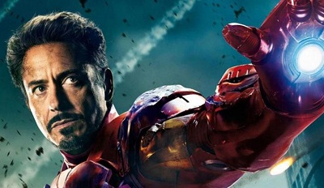

Anthony Edward Stark is a fictional character portrayed by Robert Downey Jr. in the Marvel Cinematic Universe (MCU) film franchise—based on the Marvel Comics character of the same name—commonly known by his alter ego, Iron Man. In the films, Stark is an industrialist, genius inventor, hero and former playboy who is CEO of Stark Industries.
